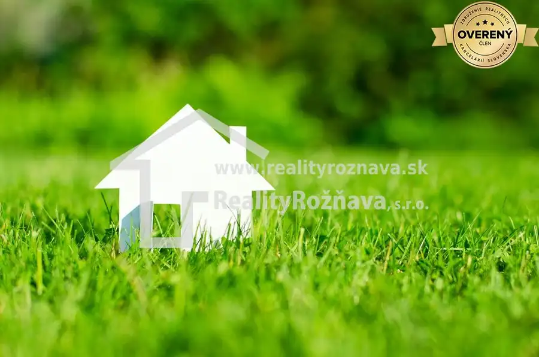
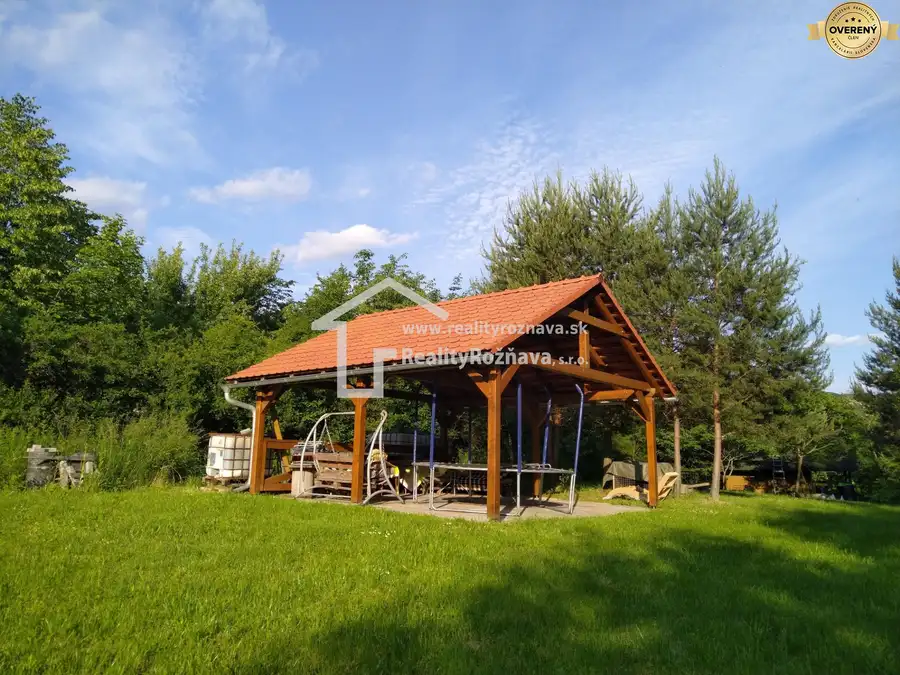
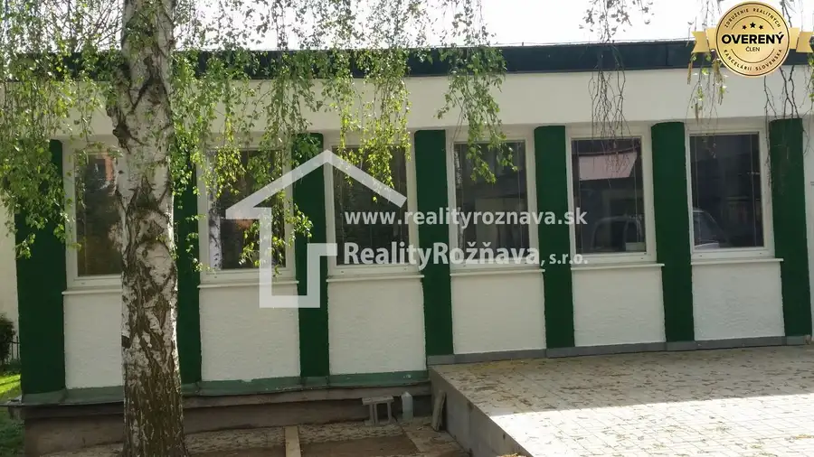

Priestory ambulancie na prenájom/Rožňava
Rožňava
- Dispozícia3-izbový
- Plocha62.92 m²
- Stavúplne prerobený
- Vlastníctvofiremné
O nehnuteľnosti
Ponúkame Vám na prenájom pekné priestory pre ambulanciu nachádzajúce sa v zdravotnom stredisku v Rožňave. Pozostávajú z troch prepojených miestností o ploche spolu 62,92 m2, pomernej časti spoločných priestorov určených na čakáreň a sociálnych zariadení (31,02m2). Miestnosti sú vymaľované bielou farbou a v každej sa nachádza nové umývadlo, klimatizácia a žalúzie na oknách.
Veľkou výhodou je, že v budove sa nachádza okrem iných ambulancií aj lekáreň.
Parkovanie je zabezpečené vo dvore.
Cena nájomného je 657€ bez DPH/mesiac, cena za energie je 422,73€ ( v tejto sume je zahrnutá elektrická energia, teplo, odvoz a likvidácia odpadkov, upratovanie spoločných priestorov, náklady na správu budov a ostatné úkony súvisiace s prevádzkou budovy. V celej budove sa nachádza internet.
Priestory sú voľné a okamžite k dispozícii.
RealityRožňava, s.r.o. Kósu Soppera 12 048 01 Rožňava
Parametre
| Úžitková plocha | 62.92 m² |
|---|---|
| Počet izieb | 3 |
| Vlastníctvo | firemné |
| Stav | úplne prerobený |
| Odvoz odpadu | áno |
| Voda | verejný vodovod |
| El. napätie | 230V |
| Kanalizácia | áno |
| Internet | wifi |
| Výťah | áno |
| Parkovanie | vonkajšie |
| Inžinierske siete | áno |
| Postavené z | tehla |
| Klimatizácia | áno |
| Bezbariérový prístup | áno |
| Okná | plastové |
| Prístupová cesta | asfaltová cesta |
| Novostavba | áno |
| Dátum zverejnenia | 25. 8. 2025 |
Kde to je
Mohlo by Vás zaujímať

Pozemok Cena dohodouPozemok v priemyselnej zóne – 1.382 m² | Investičná príležitosť Brzotín 1382 m² Ponúkame na predaj pozemok s celkovou výmerou 1382 m². Pozemok predstavuje výbornú investičnú príležitosť vďaka svojej polohe a dostupnosti. Hlavné…
Pozemok4 Cena dohodouPozemok v Betliari/ investičná príležitosť Betliar 5641 m² Ponúkame na predaj atraktívny pozemok v tichej zatiaľ nezastavanej lokalite obce Betliar. Pozemok je vhodný aj na výstavbu viacerých rodinných domov.…
Domy a budovy 249 000 €Budova v širšom centre Rožňavy Rožňava 300 m² Ponúkame Vám na predaj komerčné a prevádzkové priestory v Rožňave na Jarnej ulici. Budova ponúka široké využitie, napr. prevádzkové priestory, sídlo…